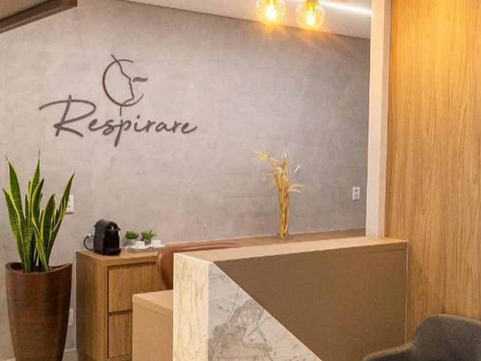
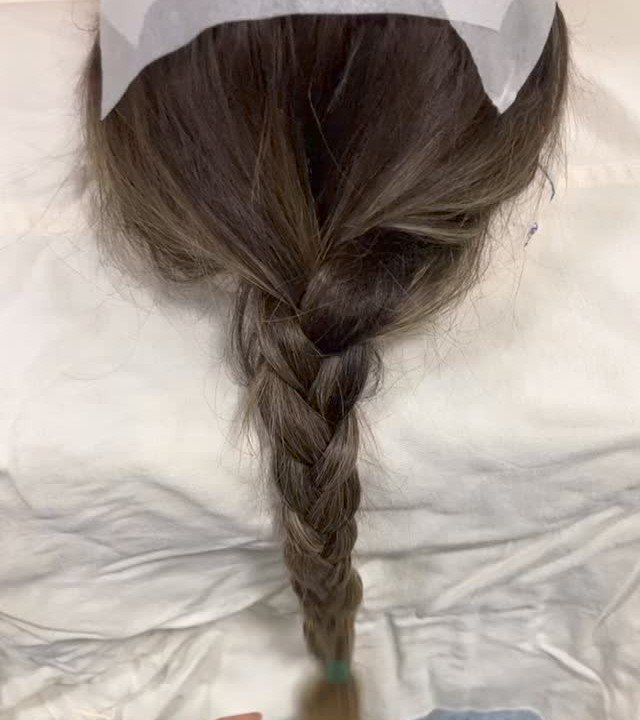
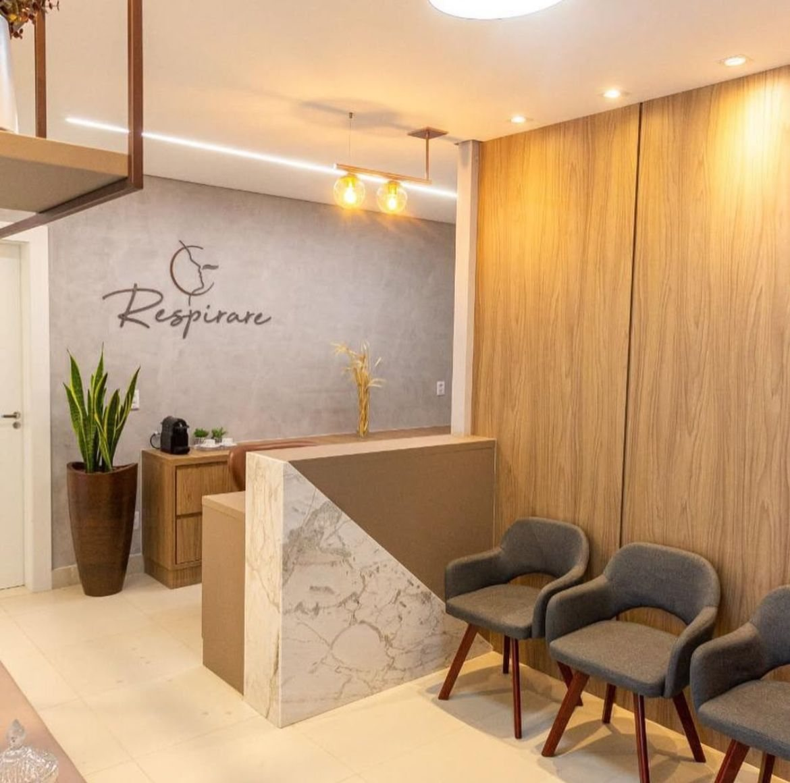
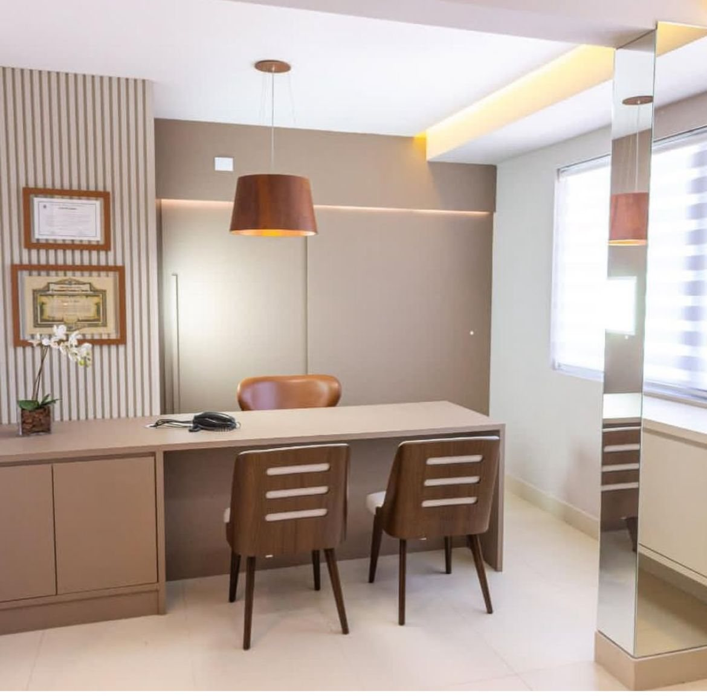
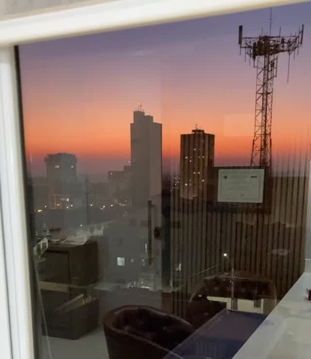
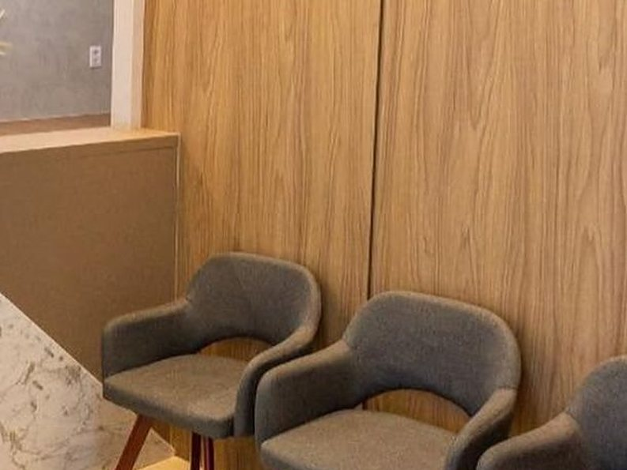

Médica otorrinolaringologista · CRM-PR 32.700 · RQE 22419
Dra. Marília Camargo
Respirar bem e um nariz em harmonia com o rosto. Otorrinolaringologia para adultos e crianças, com fellowship em cirurgia plástica facial e foco em rinoplastia, no Centro de Guarapuava.
Respirar bem e um nariz em harmonia com o rosto. Otorrino para adultos e crianças, com foco em rinoplastia.
★★★★★4,7no Google · 25 avaliaçõesNo consultório

ISobre a Dra.
O funcional e o estético, tratados juntos.
Médica formada pela PUC-PR, com residência em Otorrinolaringologia no Hospital da Cruz Vermelha Brasileira, título de especialista pela AMB e pela ABORL-CCF e fellowship em Cirurgia Plástica Facial, com ênfase em rinoplastia.
Atende adultos e crianças de todas as idades, do nariz trancado e da sinusite à cirurgia. Na Clínica Respirare, no Centro de Guarapuava, e como professora do curso de Medicina da Unicentro.
“Acredito muito no tratamento integrado entre a parte funcional e a parte estética da face.”
- 2013Medicina pela PUC-PR
- 2017Título de especialista pela AMB e pela ABORL-CCF
- 2018Fellowship em Cirurgia Plástica Facial, com ênfase em rinoplastia
- UnicentroProfessora do curso de Medicina
· os pontos marcam dados a confirmar com a Dra.
IIA consulta
Uma primeira consulta mais longa, de propósito.
A Dra. reserva uma primeira consulta mais longa para entender o que você gosta e o que não gosta, no seu nariz e no seu rosto como um todo. O plano nasce daí, e não de um padrão.
- 01
Escuta
A queixa, o histórico e o que incomoda: respirar, dormir, a aparência do nariz, ou tudo junto.
- 02
Exame
Nariz, ouvidos e garganta. Quando precisa, endoscopia nasal e exames de imagem.
- 03
Planejamento
Na rinoplastia, o nariz é planejado no contexto do rosto inteiro, com fotos e simulação no programa, para conversar melhor sobre ele.
- 04
Acompanhamento
Retornos marcados. Boa parte do resultado de uma cirurgia depende do pós-operatório.
IIIO que fazemos
O foco é a rinoplastia.
É o assunto de quase todos os posts dela. No consultório, a Dra. também atende o que ela mesma explica no Instagram: nariz trancado, septo, ronco, garganta e ouvido, de adultos e crianças.
Rinoplastia
Forma e respiração na mesma cirurgia, quando é o caso. O nariz planejado no contexto do rosto, com enxerto da própria cartilagem. Para que serve, para quem não é, como é feita, enxertos, cuidados e as dúvidas que as pacientes fazem.
Ver a página de rinoplastiaTambém no consultório · o que ela explica no Instagram
- II
Desvio de septo
Septoplastia, ou junto com a rinoplastia (rinosseptoplastia), quando o lado mais trancado compromete a respiração.
- III
Nariz trancado e rinite
Diagnóstico e tratamento, inclusive da dependência do descongestionante nasal.
- IV
Ronco e apneia do sono
Avaliação das vias aéreas, em conjunto com outras especialidades quando o caso pede.
- V
Amígdalas e adenoides
Infecções de repetição, ronco e respiração pela boca. Cirurgia quando indicada.
- VI
Ouvido e audição
Otites, tubo de ventilação nas crianças, zumbido e perda auditiva.
- VII
Otoplastia
Correção da orelha de abano, em crianças e adultos.
A lista segue o que ela publica no Instagram e nos destaques. Sem página própria por enquanto: a indicação é feita na consulta.
IVRinoplastia, passo a passo
O que acontece antes, durante e depois.
Um resumo do que a Dra. Marília explica às pacientes no consultório e no Instagram. Os prazos do seu caso são definidos na consulta.
Podemos fazer o melhor nariz, mas, se não cuidar do pós-operatório, pode não dar certo. Boa parte do resultado depende do pós-operatório.Dra. Marília Camargo

Antes da cirurgia

Dia de rino: a trança
-
01Consulta e plano
Entender o seu nariz no seu rosto
- Fotos padronizadas e simulação no programa
- Referências de pessoas parecidas com você, não de pós-operatório imediato
- Se a referência não combina com o seu rosto ou traz risco, a Dra. orienta diferente ou contraindica
É aqui que se decide o que faz sentido.
-
02Cirurgia
Em hospital, com enxerto próprio
- A estrutura da ponta usa a cartilagem do seu próprio septo, na maioria dos casos
- Orelha ou costela só quando o septo não basta ou já foi operado
- Anestesia, duração e internação conforme o caso
Rinoplastia é cirurgia: só médico faz.
-
03Primeira semana
Sem tampão, na maioria dos casos
- Quando o nariz vai ficar mais trancado, splints de silicone por 3 a 7 dias, e você respira através deles
- Dormir de barriga para cima, com a cabeça elevada
- Curativo até a retirada, no retorno
Um pouco de roxo é esperado.
-
04Meses seguintes
O resultado amadurece aos poucos
- Óculos só depois de 30 dias (lentes ou um jeito de prender com micropore)
- Protetor solar com cor e boné nos primeiros dias, para não manchar
- Retornos de acompanhamento
O inchaço diminui ao longo dos meses.
VAs perguntas que mais chegam
Um nariz bonito é o que combina com você.
Respostas curtas, nas palavras da Dra. Marília, a partir do que ela já explicou no Instagram e no PodCuidar. O detalhe do seu caso fica para a consulta.
- I
Vou precisar de enxerto na minha rinoplastia?
Sim. Na maioria das vezes, da cartilagem do seu próprio septo: o desvio que é retirado vira a estrutura da ponta. Orelha ou costela entram quando o septo não basta, está fraco ou já foi operado.
- II
Vou ficar com tampão no nariz?
Antigamente usava-se muito tampão; hoje raramente. Quando o nariz vai ficar mais trancado, a Dra. usa splints de silicone por 3 a 7 dias, e você respira através deles. Tirando os splints, a respiração volta.
- III
Tenho medo de ficar com cara de nariz operado.
Nem toda rinoplastia precisa de um nariz empinado ou com uma curvatura marcada. O resultado não precisa chamar atenção pelo “nariz operado”: ele pode simplesmente harmonizar o rosto e fazer sentido para aquela pessoa.
- IV
Desvio de septo sempre precisa de cirurgia?
Não. É cirúrgico quando incomoda: quando um lado respira pior do que o outro e isso compromete a respiração e a qualidade de vida. Muita gente convive com o nariz trancado sem perceber.
Muitas vezes não é somente estética: é saúde, é autoestima, é qualidade de vida.
Dra. Marília Camargo · sobre a rinoplastia, no Instagram · agosto de 2023
- 2017
- Título de especialista · AMB · ABORL-CCF
- 2018
- Fellowship em cirurgia plástica facial · ênfase em rinoplastia

VIA clínica
Clínica Respirare, no Centro de Guarapuava.
Tv. da Independência, 222 · 4º andar · Clínica Zattar

Consultório

Fim de tarde, da janela da Respirare · dos stories dela

Sala de espera
- Endereço
- Tv. da Independência, 222, 4º andar (Clínica Zattar) · Centro · Guarapuava/PR · 85010-150
- Horário
- Segunda a quinta, 8h às 12h e 13h30 às 17h30 · Sexta até 17h
- Acesso
- Entrada acessível · atendimento com hora marcada · adultos e crianças
Como chegar
A Respirare nasceu da parceria da Dra. Marília com a Dra. Rita Penha, também otorrinolaringologista.
VIIVamos começar
Comece pela consulta.
É nela que a Dra. entende o seu caso, o funcional e o estético, e monta o plano. Sem pressa e sem padrão.